原视频：Bilibili · BV1yu9cBCEAb（时长约 81 分钟） 课程：南京大学《操作系统原理》（2026）第 10 讲 整理说明：本书由视频语音转录后经 AI 重构而成；口语已转为书面语；关键时间点标注 (参考时间)，截图占位对应视频位置。
1. 开场：实验与上讲翻车复盘
(参考时间: 00:00)
实验 Online Judge 已发布。若结果被 reject，不必焦虑：可以用 vibe coding（用自然语言驱动 AI 写代码的方式）让 AI 生成测试用例。Lab 的隐藏测例并非全空——可以主动猜测 OJ 如何测进程等行为，甚至让 AI「扮演老师」推断判题策略。
上讲「翻车」的原因值得记录：主讲人让 AI 编译并安装 musl libc（一个强调小巧可移植的 C 标准库实现），看到 make install 与「成功」提示后未做严谨验证，实际系统仍走 apt 安装的工具链，调试信息完全不可用。这次改为每条命令后人工核对，才保证演示可靠。
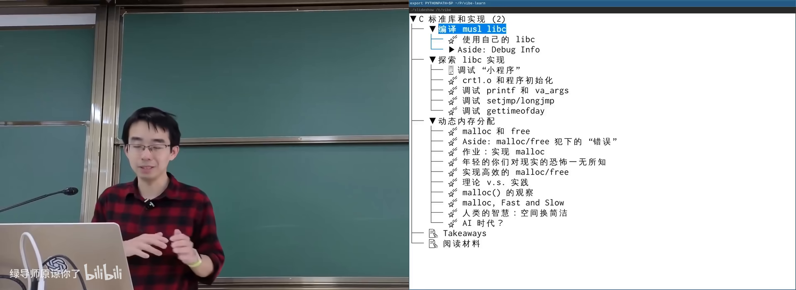
开场：实验 OJ 与上讲翻车复盘在 B 站打开 (00:00:30)
图：可关注「AI 说成功 ≠ 系统真的装对了」这一工程判断。
1.1 为什么需要 libc
操作系统与应用之间只有一层很小的接口：system call。进程、文件、显卡等一切 OS 对象都只能通过系统调用访问。但若直接用系统调用写程序，代码会极其冗长——例如 write 需要文件描述符、缓冲区、长度三个参数，每次都要自己算长度。
libc（C 标准库，把系统调用包装成更易用的 C 接口）因此出现：
应用程序
↓
libc（平台无关的抽象层：printf / fopen / malloc …）
↓ （经 C 的 FFI / 内联汇编）
system call
↓
操作系统对象（进程、文件、设备…）
flowchart TB
App["应用程序"] --> Libc["libc 抽象层"]
Libc -->|"FFI / 内联汇编"| SC["system call"]
SC --> OS["OS 对象: 进程/文件/设备"]
libc 与 C、与 UNIX 深度绑定：FILE* 与文件描述符紧密相关。但只要操作系统「还是给人用的」，就应提供打开文件一类能力——因此从 Linux、Windows 到树莓派 Pico 级微控制器，几乎都有语义相近的 libc 接口。
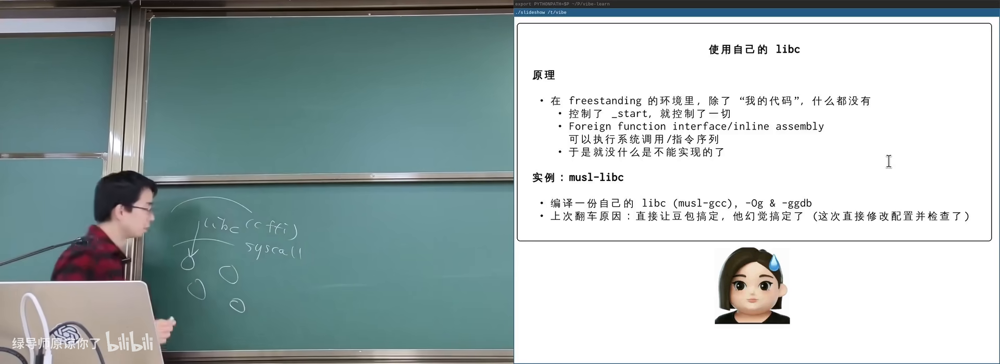
系统调用与 libc 分层在 B 站打开 (00:06:30)
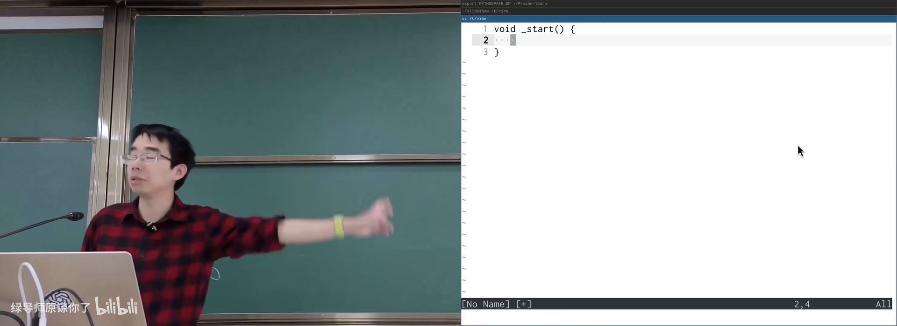
从 _start 接管程序：free standing 编译在 B 站打开 (00:03:50)
图：可关注自定义 _start 后从零接管入口。
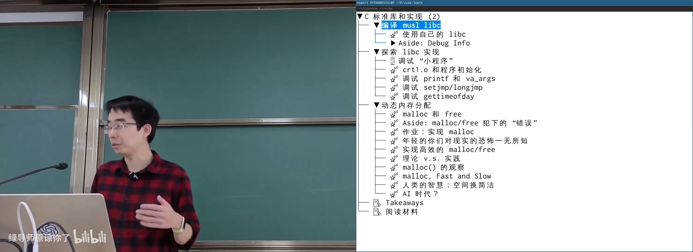
实验 Online Judge 与 vibe coding在 B 站打开 (00:00:10)
图：可关注 OJ 与让 AI 猜测测例的策略。
2. 调试信息：-g 到底做了什么
(参考时间: 00:08:00)
上讲翻车的直接症状是：GDB 提示「没有可用的源代码」。根因是没有调试信息（debug info，把二进制地址映射回源码位置与变量含义的元数据）。
对用户程序，gcc -g 即可；要调进 musl libc，必须用带调试信息的方式编译库本身（如 -Og -ggdb，并确保 CFLAGS 真正生效）。
2.1 二进制里的 .debug_* 段
-g 会在 ELF 中塞入额外 section（段，二进制里按用途划分的数据块），例如：
.debug_info：类型、变量、函数等核心信息.debug_line：地址到源码行号的映射.debug_frame：栈展开（调用帧）信息.debug_str/.debug_line_str：调试用字符串表.debug_ranges：地址范围到编译单元的映射
这些信息对应的标准是 DWARF（调试信息的主流格式；名称取自「矮人」，与 ELF「精灵」形成起名梗）。
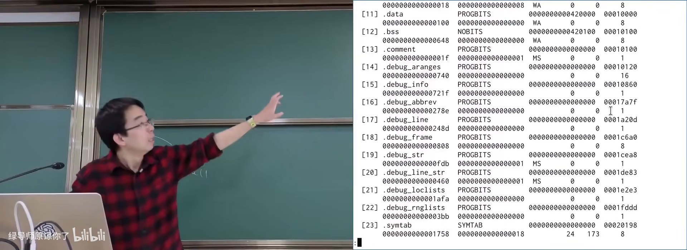
readelf 查看调试相关 section在 B 站打开 (00:11:00)
图：可关注 .debug_* 段名与符号表中 crt1.o、__libc_start_main 等字符串。
2.2 符号表也能粗定位
即使没有完整 debug info，ELF 仍有符号表（符号表，记录函数/变量名与其地址的表）。nm a.out 可看到 main 在 .text 中的地址；PC 走到该地址时即可知道进入了 main。
- 符号表：能回答「现在在哪个函数」
- 完整 debug info：还能回答「在函数第几行」「变量在哪、值是什么」
addr2line 可把 PC 映射回源码行。优化（内联、重排）会让「一条 C 语句 ↔ 一段汇编」的对应变难；不优化时对应关系更直观。
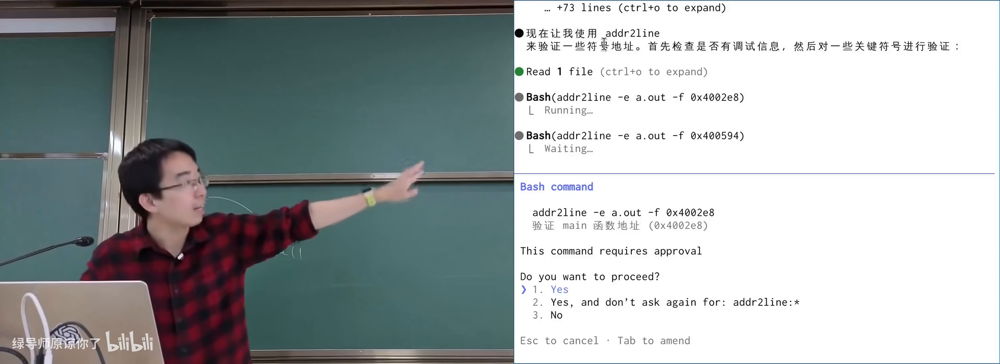
符号表与 addr2line 演示在 B 站打开 (00:17:00)
2.3 DWARF 为何像一门小语言
变量可能在寄存器、内存，或已被优化掉；位域还要从 32 位整数里抠出某一位。因此 DWARF 内含一套近似图灵完备的 bytecode（字节码指令集），用于描述「在某 PC 范围内，如何算出变量的值」。
同一套机制也用于 C++ 异常的栈展开（stack unwinding，抛出异常时沿调用栈回退到上一层处理点）。
2.4 其他语言的 debug info
JavaScript/TypeScript 会经多层转译（transpiler）到可执行 JS，浏览器沙盒又没有项目目录，因此 debug info 常把源码一并嵌入（如 *.js.map）。这与 C 中「debug info 只存映射、源码在磁盘路径」的设计不同，但目标一致：从底层状态重构上层含义。
3. 有了 debug info 能做什么
(参考时间: 00:27:00)
调试信息让「汇编意义上的状态」可被重构回 C 源码模型：
| 能力 | 说明 |
|---|---|
| addr2line | PC → 源码行 |
| backtrace | 恢复完整函数调用栈 |
| 采样性能分析 | 定时暂停并恢复调用栈，得到火焰图（flame graph，横轴时间、纵向堆叠调用栈） |
| 崩溃快照调试 | 对 core/快照恢复状态，甚至改 PC 继续跑 |
| Sanitizer 报告 | AddressSanitizer 等工具用 debug info 指出 use-after-free 等错误位置 |
strace 看到的是系统调用层；debug info + 采样则进入用户态代码结构。musl 静态程序系统调用极少，glibc 静态链接也会多出 readlinkat、getrandom 等调用。
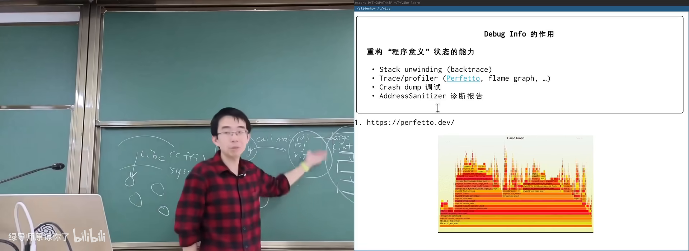
火焰图与采样性能分析示意在 B 站打开 (00:32:00)
Use-after-free 示例：free(p) 后再使用 p，地址空间里往往仍可读，程序未必崩溃，但是未定义行为（undefined behavior，标准不保证结果的程序状态）与安全隐患。开启 fsanitize=address 后会明确报 heap-use-after-free。
4. 实战：从 _start 调到 main 与 exit
(参考时间: 00:35:00)
4.1 CRT 启动：进程栈上的 argc/argv/envp
对几乎为空的 dummy.c（return 1）用 musl 编译后 strace 可见：execve 之后只做很少事再 exit。用 GDB 从 _start 单步：
_start是一段汇编，从进程初始栈指针SP取参数；- 从指针可逆向出 initial process stack（进程初始栈，内核在 execve 时布置的 argc/argv/envp 与辅助向量）；
argc在p[0]，argv从p+1起，envp在argv + argc + 1之后；- 再往后是 auxv（辅助向量，内核传给运行时的元数据：VDSO 地址、随机数种子等）。
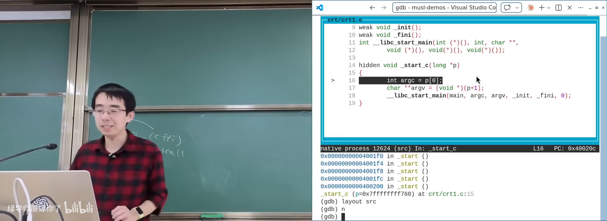
CRT：从 _start 到 main 的初始栈在 B 站打开 (00:36:30)
图：可关注 p[0]=argc、argv、envp 与环境变量内容。
4.2 __libc_start_main 与 main
init_libc 会处理环境变量与辅助向量，再通过函数指针进入 __libc_start_main 一类逻辑，最终按调用约定（calling convention，函数调用时参数/返回值放哪些寄存器、谁保存什么的约定）把 argc/argv/envp 放入正确寄存器并跳转到 main。
main 返回后走 exit → stdlib 清理 → 系统调用 _exit，进程结束。
4.3 进 musl 调 printf
在带 debug info 的 musl 上对 printf 下断点，可看到：
printf很短，取出变参后调用vfprintf；stdout是封装了文件描述符、缓冲区、flag 的结构体（fd=1，缓冲区大小常见 1024）；- 最终经
write一类系统调用输出。
strace 可验证：一次成功的格式化打印往往只触发很少的 write 类调用。
5. 变参函数与调用约定
(参考时间: 00:44:00)
printf 依赖 C 的变参数（varargs，参数个数不定的函数）。在旧式 x86 32 位 cdecl 下，参数几乎都压栈，变参实现较直观；在 x86-64、ARM64、RISC-V 等寄存器多的体系结构上，前几个参数走寄存器，库代码必须先把寄存器存回栈上，才能按数组方式遍历变参。
ARM64 上可观察到：mov 把参数写入 x0/x1/...；libc 内再把 x1/x2 等 store 到 SP+偏移，在栈上形成可遍历的参数区。
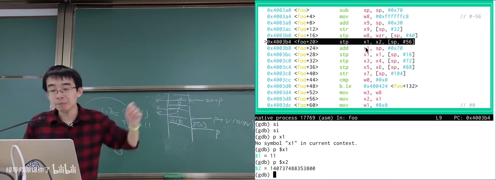
printf 与变参数在寄存器/栈上的布局在 B 站打开 (00:47:30)
6. setjmp/longjmp 与 callee-saved 寄存器
(参考时间: 00:48:30)
setjmp/longjmp（在当前位置保存执行环境，之后可从任意深层调用跳回该环境）通过保存/恢复一组寄存器实现。
实验方法：先把一批通用寄存器「刷成红色」→ setjmp → 再刷成蓝色 → longjmp → 观察哪些寄存器回到红色。
在 ARM64 上典型结果是：setjmp 保存、longjmp 恢复约 X19–X28；X0–X18 不会恢复——因为它们属于 call-clobbered（被调用方可随意使用的寄存器，调用方不得假设其值在调用后仍保留）。与之相对的是 callee-saved（被调用方必须保存/恢复的寄存器）。主讲人更喜欢用 call-clobbered 描述：一旦进入某个函数调用，X0–X18 就「归编译器随便用」。
这正是 ABI（应用二进制接口，跨编译单元/库时调用与数据布局的约定）的一部分；通过小实验即可逆向观察到部分约定。
7. gettimeofday 与 vDSO：不进内核的「系统调用」
(参考时间: 00:56:00)
用 gettimeofday 测 usleep(200ms) 间隔，结果合理；但 strace 里看不到 gettimeofday，只有 clock_nanosleep。时间却打印正确——这并不矛盾。
原因：现代 libc 对时间一类高频、可近似读取的操作走 vDSO（虚拟动态共享对象，内核映射进每个进程地址空间的一小段可执行代码）。进程直接 call 过去，不陷入内核。
加载/绑定过程（musl 思路）：
- 从 auxv 中读
AT_SYSINFO_EHDR得到 vDSO 的 ELF 头； - 像微型加载器一样解析 vDSO 的 program header 与符号表；
- 找到
__kernel_clock_gettime等符号并跳转执行。
vDSO 读时钟时常用「读 clock tick → 再读一次 → 相等则认为未跨 tick」的顺序一致性技巧；调试器单步极慢时两次 tick 几乎必变，循环看起来像死循环——正常运行则几乎总是立即成功。
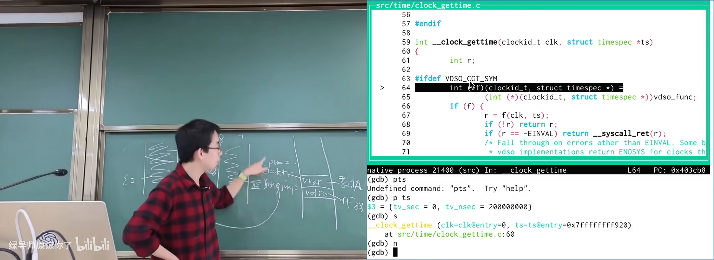
gettimeofday 经 vDSO 完成在 B 站打开 (01:03:00)
图：可关注 auxv、vDSO 映射与符号绑定路径。
8. malloc/free：机制、心智负担与安全
(参考时间: 01:11:00)
malloc 可分配很小或很大的内存，而 OS 粒度更粗（页通常是 4KB）：mmap 拿到的是页的整数倍；brk 可调进程堆顶。libc 在用户态维护空闲块池，在系统调用拿到的大块上再切分小块。
API 设计问题：malloc/free 与 write 这类「只写字节、无额外配对义务」的接口不同，它要求：
- 所有可能路径上都有配对的
free（否则泄漏）； free之后指针立即非法（否则 use-after-free）。
Tony Hoare 自嘲空指针是 billion-dollar mistake；malloc/free 给程序员的心智负担同样巨大。工程上的应对包括：
- free 后置
NULL（防误用，但错误路径可能变崩溃）； - C++ 的 RAII（资源获取即初始化，构造时获取、析构时释放）；
- Rust 的 ownership/borrow（所有权与借用，编译期阻止悬垂指针）。
作业视角：大块分配直接问 OS；小块是数据结构题（维护不相交空闲区间）。算法课的平衡树解法与真实 allocator 并不完全相同，可参考 1990 年代 malloc 综述。
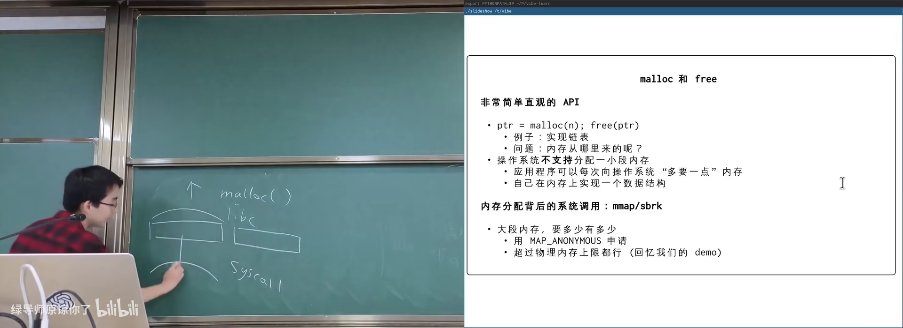
malloc/free 与 OS 粒度在 B 站打开 (01:14:00)
附录：概念补给
system call（系统调用）
- 是什么：用户程序请求内核服务的受控入口。
- 课上为何出现：libc 之下的唯一真实接口；调试时常对照 strace。
- 和什么像：柜台办事：你不能直接进库房，只能按窗口流程申请。
libc（C 标准库）
- 是什么：把系统调用包装成可移植 C 接口的一层库。
- 课上为何出现：本讲调试对象；平台无关抽象的关键。
- 和什么像：万能插座转换头——底下接口不同，上面电器用法一致。
debug info（调试信息）
- 是什么：嵌在目标文件里、把地址映射回源码与变量的元数据。
- 课上为何出现：上讲翻车根因；
-g的真实产物。 - 和什么像：地图图例：没有它只有坐标，有它才能认路。
DWARF
- 是什么：调试信息的事实标准格式，内含描述变量位置的小型指令集。
- 课上为何出现：解释
.debug_*段与「变量被优化掉」。 - 和什么像：快递面单规范：承运商、分拣机都按同一套字段读。
ELF
- 是什么：Linux 上可执行文件与目标文件的常用格式，描述内存布局等。
- 课上为何出现：调试段、符号表、加载都落在 ELF 结构里。
- 和什么像：房屋图纸：写清哪层住人、哪层放货、门朝哪开。
符号表（symbol table）
- 是什么：记录符号名与地址对应关系的表。
- 课上为何出现：无完整 debug info 时也能定位函数。
- 和什么像：班级点名册：知道名字，能找到座位号。
addr2line
- 是什么：把程序计数器（PC）地址映射到源码文件与行号的工具。
- 课上为何出现：验证 debug info 是否生效的直接手段。
- 和什么像：用门牌号反查住户。
火焰图（flame graph）
- 是什么：采样调用栈得到的性能可视化，宽处代表耗时占比大。
- 课上为何出现：debug info 在 profiler 中的应用。
- 和什么像：交通热力图：越堵的路段颜色/面积越显眼。
sanitizer（尤其是 AddressSanitizer）
- 是什么：编译期插桩、运行时检查内存错误的工具集。
- 课上为何出现：use-after-free 等 UB 在 debug info 辅助下可被指出。
- 和什么像：工地安全巡检：不阻止你施工，但会拉警报。
initial process stack（进程初始栈）
- 是什么：execve 后内核布置的 argc/argv/envp/auxv 所在栈区。
- 课上为何出现：CRT 从
_start恢复参数的物理来源。 - 和什么像：入职当天工位上已放好的门禁卡、手册与通知单。
auxv（辅助向量）
- 是什么：内核传给运行时的键值元数据（vDSO 地址、随机种子等）。
- 课上为何出现：vDSO 如何被 libc 找到。
- 和什么像：快递箱里附的安装说明，不是货本身。
calling convention / ABI
- 是什么：函数调用时参数、返回值、寄存器保存责任的约定。
- 课上为何出现：变参、setjmp 实验的底层解释。
- 和什么像：交通规则：大家都靠右行驶，才不会对撞。
call-clobbered / callee-saved
- 是什么：前者调用后不保证保留；后者被调用方必须保存恢复。
- 课上为何出现：解释 longjmp 只恢复部分寄存器。
- 常见误解：不是「所有寄存器都会被 setjmp 保存」。
vDSO
- 是什么：内核映射进用户地址空间的一小段代码，用于不陷入内核的快速系统功能。
- 课上为何出现：解释为何 strace 看不到 gettimeofday。
- 和什么像：小区内设的自助服务机，不必去总行排队。
setjmp/longjmp
- 是什么：保存/恢复执行环境以实现非局部跳转的 C 机制。
- 课上为何出现：用寄存器刷色实验逆向观察 ABI。
- 和什么像：游戏存档/读档：读档后中间过程消失。
use-after-free
- 是什么：释放堆内存后仍使用该指针。
- 课上为何出现：malloc/free 语义与 sanitizer 演示。
- 常见误解：地址还能读 ≠ 程序正确；这是 UB。
RAII
- 是什么：资源在对象构造时获取、析构时释放的 C++ 惯用法。
- 课上为何出现：降低 malloc/free 与锁的配对负担。
- 和什么像：借钥匙开门，出门自动还钥匙（离开作用域即归还）。
书架 Shelf 流水线生成 · 内容衍生自 B 站公开课程视频 BV1yu9cBCEAb